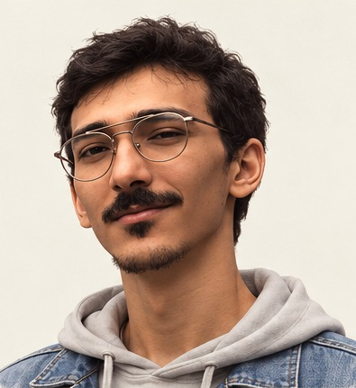

Characters with personality
Sculpting, character and creature modeling, costume, grooming, PBR materials, rigging, and blendshapes.
Explore Al Shamel ↗ABOUT / OSCAR ANWAR
3D game artist with a background in characters, environments, and technical art.

FROM FORM TO FINISHED ASSET
I’m Oscar Anwar, a 3D artist based in Egypt with over six years of experience. I was the sole 3D artist on Dummy Pirates: Ocean Tales, a PC game released on Steam, and later led 3D and technical art for Torum’s Unity AR application.
My foundation is in 2D art, and I still enjoy drawing, animation, and concept art. In 3D, I work across characters, environments, and props, taking assets through modeling, retopology, UVs, PBR texturing, lighting, and integration into Unity or Unreal Engine.
I’ve worked as a freelance artist, a character team lead, a game director, and a lead technical artist. That experience has taught me to break a brief into practical stages, give useful feedback, and work closely with artists and engineers to carry an idea through production.
Sculpting, character and creature modeling, costume, grooming, PBR materials, rigging, and blendshapes.
Explore Al Shamel ↗Stylized environments, hard-surface props, look development, lighting, rendering, and cinematic scene work.
Explore Dummy Pirates ↗Unity and Unreal integration, shaders, VFX, AR assets, optimization, and production workflows built around performance budgets.
Explore Torum ↗EXPERIENCE
2020 — Present
Freelance 3D Artist
Characters, environments, props, and hard-surface assets for studios and direct clients, from blockout to final rendering or engine integration.
Oct 2023 — Sep 2024
Lead 3D & Technical Artist
Led 3D production and workflow development for an interactive AR app. Built Unity assets, blendshapes, shaders, lighting, and post-processing; directed outsourced artists and worked with engineers on optimization.
View production breakdown ↗Jan 2022 — Jun 2023
Game Director / 3D Artist
Sole 3D artist in a six-person indie team. Created ships, characters, environments, textures, shaders, and VFX, alongside game direction, level design, UI/UX, and production planning. The PC game entered Steam Early Access in April 2023 and released in November 2024.
View production breakdown ↗Jul — Sep 2022
3D Character Artist
Translated stylized ant concepts into an optimized, rig-ready base character and variations.
Aug 2021 — Jul 2022
3D Character Artist / Team Lead
Guided character production from concept to final render, coordinating sculpting, modeling, retopology, UVs, texturing, lighting, and compositing across the team.
Sep 2020 — Aug 2021
3D Artist
Created 3D and motion work for a pitch to ROTANA Studios, collaborating across storyboarding, modeling, animation, simulation, surfacing, lighting, and rendering.
Before moving into 3D production, I worked in graphic design at Arai for Advertisement & PR in Riyadh (2015–2017), across branding, motion, and print.
EDUCATION
Diploma in Digital Animation & Game Arts · The One Academy · 2019–2022
Arabic — native · English — fluent
MY TOOLKIT
A small note: I sign my artwork online as ZAMR.
CONTACT
For studio roles, freelance projects, and production enquiries.
zamrart@yahoo.com